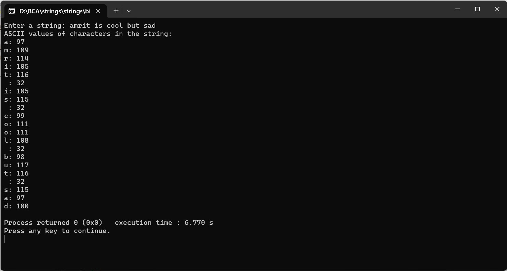

ENTER THE STRING FROM USER AND CONVERT CHARACTERS INTO THEIR ASCII VALUES IN THE INTEGER ARRAY.
#include
#include
#define MAX_LENGTH 100
void convertToASCII(const char *inputString, int *asciiArray) {
int length = strlen(inputString);
for (int i = 0; i < length; i++) {
asciiArray[i] = inputString[i]; // Assigning ASCII value to array
}
}
int main() {
char inputString[MAX_LENGTH];
int asciiValues[MAX_LENGTH];
printf("Enter a string: ");
fgets(inputString, sizeof(inputString), stdin);
// Removing the newline character from the input
inputString[strcspn(inputString, "\n")] = '\0';
convertToASCII(inputString, asciiValues);
printf("ASCII values of characters in the string:\n");
for (int i = 0; i < strlen(inputString); i++) {
printf("%c: %d\n", inputString[i], asciiValues[i]);
}
return 0;
}
